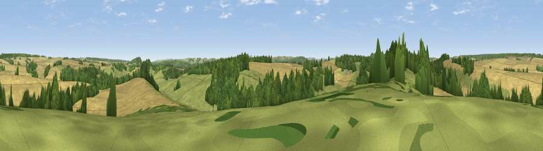

Viewpoint near Chilmark
#37622 in England · top 74% of its area beats it · near ChilmarkThe view, rendered

A 360° render of this exact spot computed from the terrain model, tree cover and land cover — summer colours, afternoon light, calibrated against photographs of famous viewpoints. Real trees, hedges and buildings will differ in detail.
The panorama
Grey silhouette: terrain skyline in each direction (720 bearings, Earth curvature and refraction included). Dashed green: skyline with trees (+15 m) and buildings (+8 m) as obstacles. Blue strip: how far the ground is visible on each bearing.
Where the view opens
Wedge length = distance to the farthest visible ground on that bearing (vegetation-aware). Rings at 10, 25 and 50 km.
What fills the view
50% cropland · 26% grassland · 25% woodland
Angular shares of the visible panorama (visual magnitude), not map area. Landscape diversity 0.46 (0–1 Shannon).
Key numbers
More beautiful places nearby
The staircase of upgrades: each row has a higher view potential than everything closer. Driving times are estimates from straight-line distance, calibrated against real road routing — check an actual route before setting out.
| Place | Direction | Drive | Score |
|---|---|---|---|
| Viewpoint near Teffont Evias | E · 2 km | ~6 min | 44.3 |
| Castle Ditches | S · 4 km | ~8 min | 54.8 |
| Viewpoint near Fonthill Gifford | WSW · 5 km | ~11 min | 64.2 |
| Haddon Hill | W · 8 km | ~17 min | 64.6 |
| Viewpoint near West Knoyle | W · 9 km | ~18 min | 66.4 |
| Trow Down | S · 10 km | ~20 min | 67.5 |
| Monk's Down | SSW · 11 km | ~21 min | 74.4 |
| Viewpoint near Berwick St John | SSW · 12 km | ~22 min | 78.2 |
51.08797, -2.05885 · source: screening · position refined by local search. Computed location — check access rights before visiting.